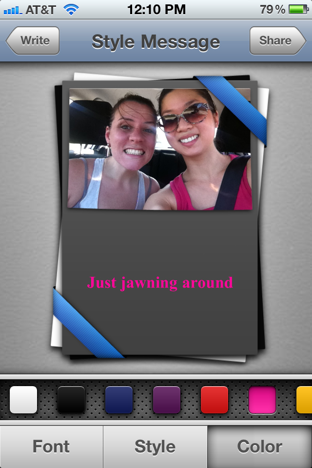
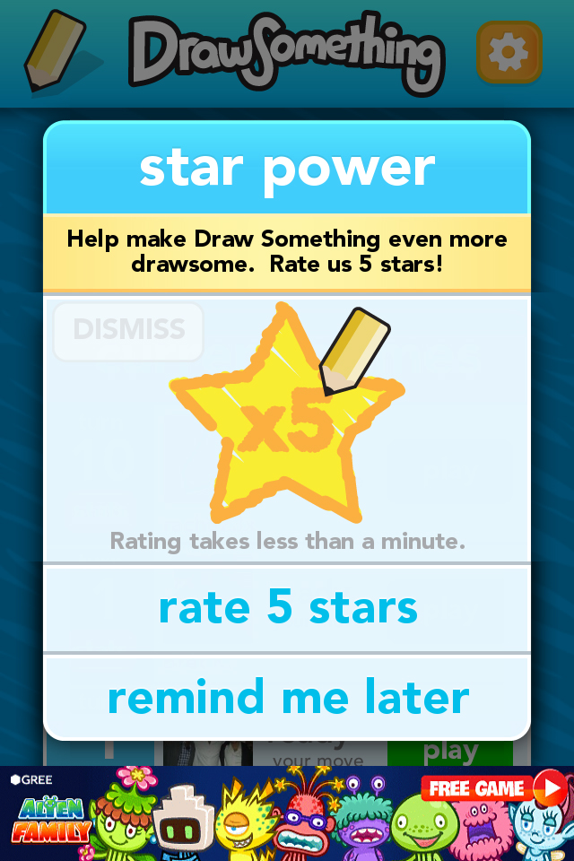

Research
Finding the right angle
Quantitative Data
As a first step in the process, I did loads of quantitative research. I tried to gather as much inofrmation as I could find on both the travel space - since the app was geared towards the traveler / local dynamic - and the check in space - since the app was meant to be a social / local game (ala Foursquare). I compiled my findings into a series of infographic visual representations to share with the team and inform future design decisions.
Qualitative Data
As a first step in the process, I did loads of quantitative research. I tried to gather as much inofrmation as I could find on both the travel space - since the app was geared towards the traveler / local dynamic - and the check in space - since the app was meant to be a social / local game (ala Foursquare). I compiled my findings into a series of infographic visual representations to share with the team and inform future design decisions.





